Shasta - June 2019
This view just never gets old!
Participants: myself, Daniel Lin, Richard Liu, and Richard Liu's father (Mr. Liu or Gang Liu). We made it to the top! This is the trip report, written about 5 months later, long overdue.
Day 0
A relatively late start! We made it to the trailhead just a half hour before sunset.
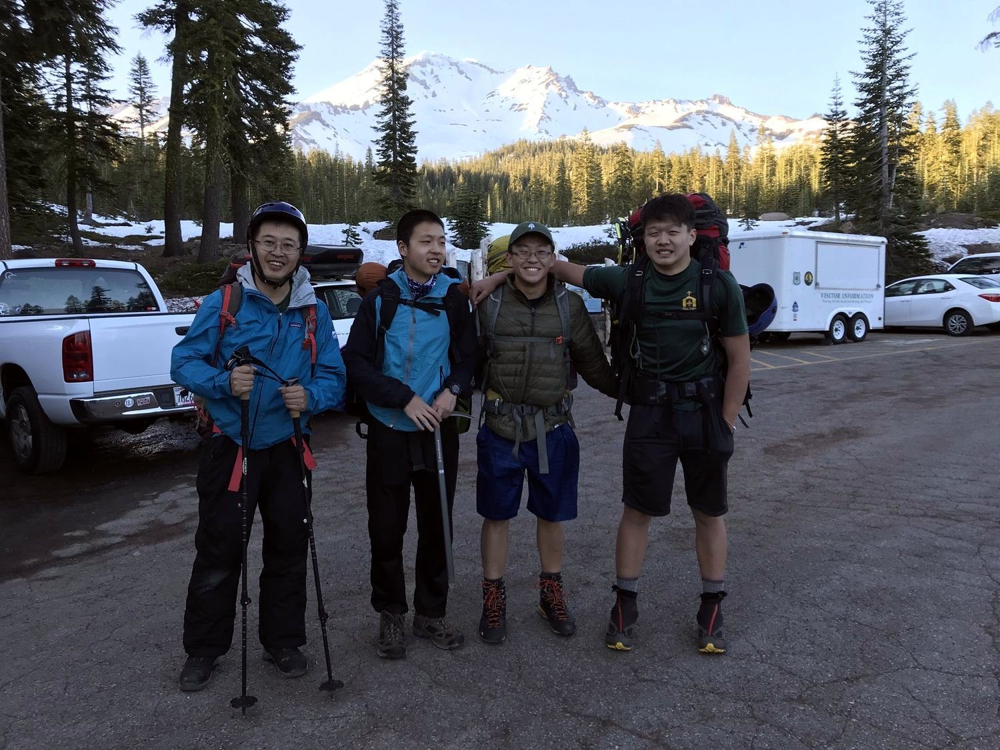
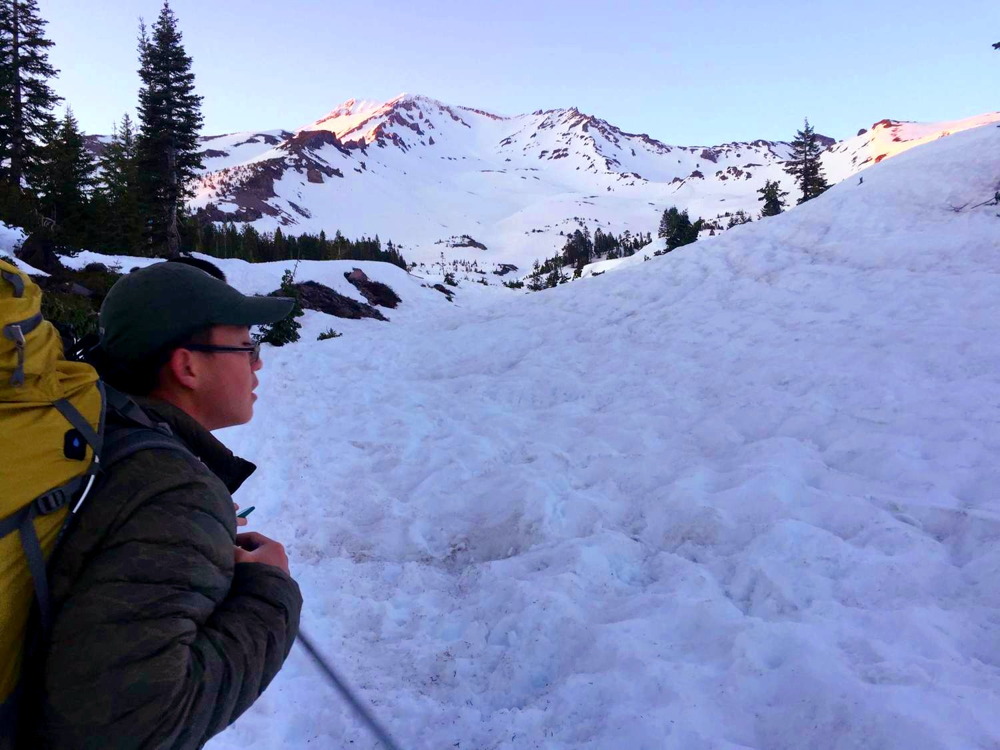
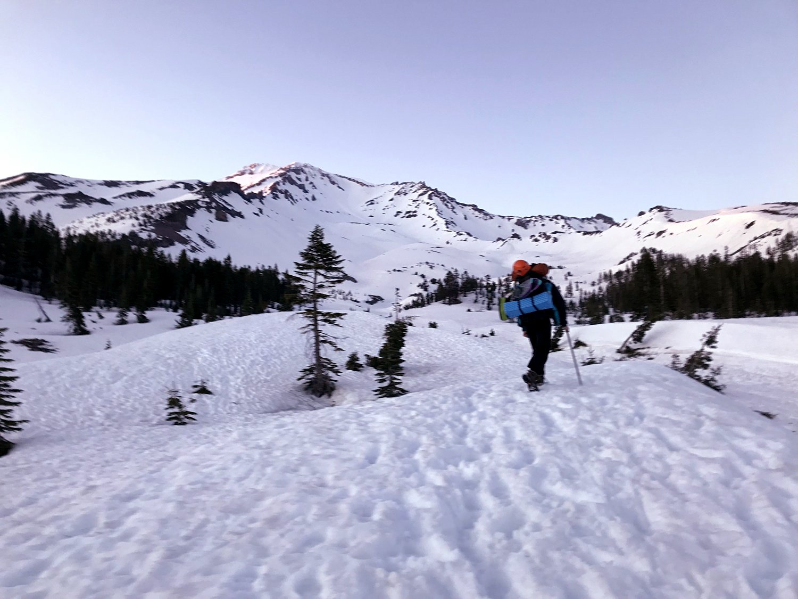
That night we camped at horse camp, arriving in the dark. Full moon night.
Day 1
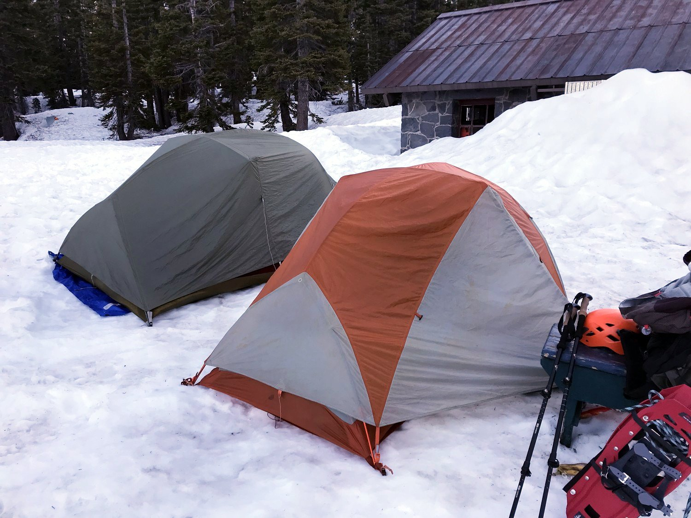
Our campsite right next to the hut
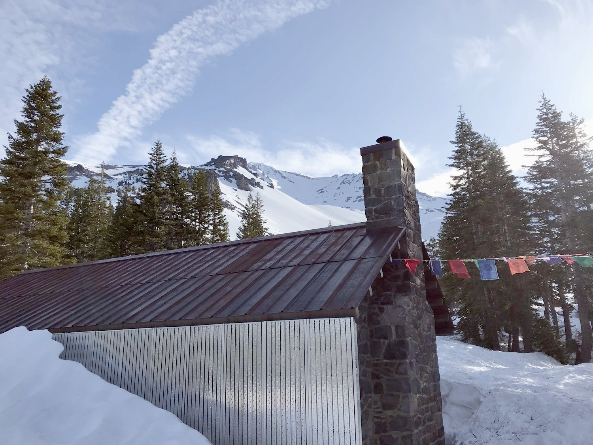
Beautiful tibetan prayer flags by the hut
I forgot what we ate that morning, must have been really insignificant. We didn't get the earliest start, and our progress was relatively slow compared to the other climbers.
making our way up to Helen Lake
some breaks along the way!
We made it to Helen Lake (which, for the uninformed, is filled with snow almost all year round and registers as a simple flattening along the slope of Avalanche Gulch.) There were already a ton of people there and we had to walk around for quite a while to find an open hole to set up our tent.
We found one eventually, but not before the clouds started rolling in! Luckily, there was no rain/snow/thunder. Daniel started to have a splitting headache, which lasted through the night.
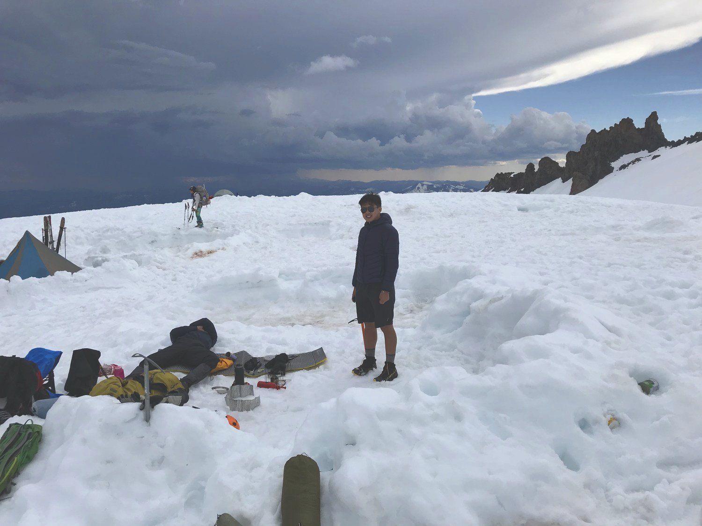
you can see daniel lying on the ground in this image.
Day 2
Thankfully we didn't sleep in this year! We had a nice alpine start at either 3 or 4 in the morning (i forgot!) and we were off about 45 minutes later. Everybody was really sleepy, but the steep uphill quickly put us in our paces.
It was totally pumpin' all the way to Red Banks. Our pace this year was a lot slower than last year for some reason, but that was alright. We were lucky to have a lot of step-holes carved out by people climbing in the afternoon when the snow was softer. These saved us a lot of calf strain. My boots were also way too heavy and way too stiff.
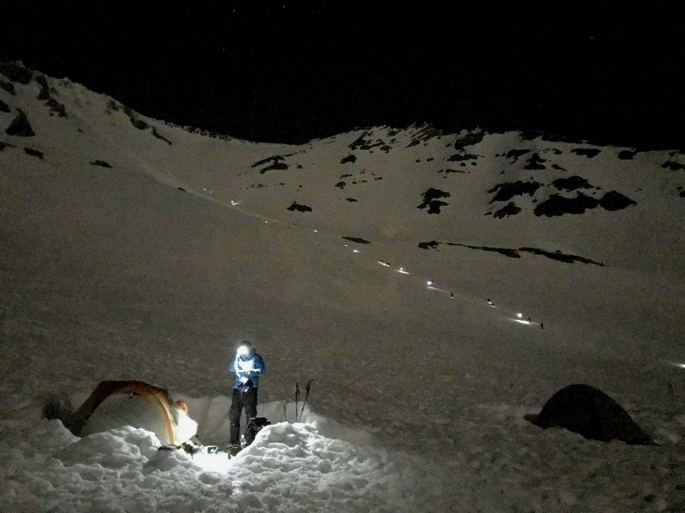
I know I'm not supposed to enjoy having to climb with so many other people on the mountain, but this was pretty beautiful.
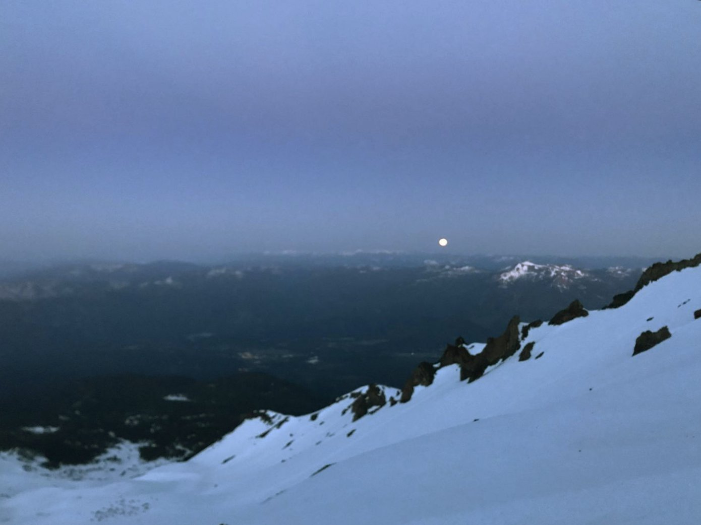
A beautiful moonrise.
Having fun!
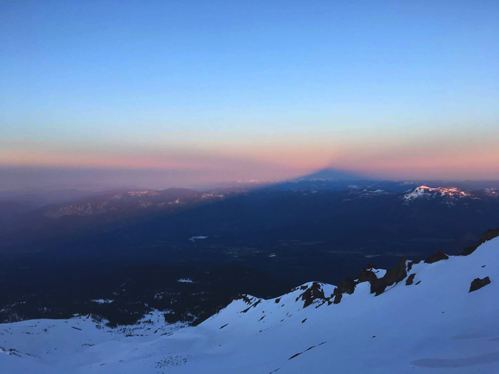
Watching this shadow emerge was a pretty amazing experience
Cresting at Red Banks was pretty fun. At this point, Mr. Liu left us to summit alone. To be fair, Red Banks is probably the most beautiful spot on the route, so he didn't miss too much! The next several hours would be characterized by really bad headaches for Daniel and Richard and some pretty severe nausea for me. I don't remember much.
view from Red Banks towards Konwakiton glacier
Headwall for the Konwakiton glacier is behind us
The enormous summit plateau---this was so tedious to traverse in the slushy snow
Me in front of the short summit
Summit photo! (At this moment Richard wanted to get the **** off that mountain)
you can't see it in this photo, but Richard is yelling at us to hurry up
you can't see it in this photo, but Daniel is enduring some massive pain
It seemed like we were one of the last ones to summit despite having started reasonably early. We were probably not acclimatized enough to be fast... On the descent, I started getting my headache (my headaches only come on the descents for some weird reason) so I was not really thinking straight. Neither were Richard and Daniel---we were all sort of just in a painful trance and sliding down. I'm thankful we all got back to Red Banks safely.
you can't see it in this photo, but I feel like smashing my head open
We had a great glissade, though personally not as great as last year's. I think the snow was a bit too soft. At the bottom of the glissade, my boots were so full of snow that I couldn't walk. (I didn't have gaiters since the boots seemed to be large enough to not retain snow.) I had to walk about 200 meters barefoot back to the tent where I had my spare pair of shoes. I thought I was going to open my socks and find my toes gone!
We lounged at Helen Lake for a while before descending, mostly because we were too exhausted to clean up our crap.
I had some fun eating pineapples out of a can using Becky as my spoon AND can opener. That's a multi-tool right there.
We wanted to stay there forever since we were so tired, but we made our way down anyways.
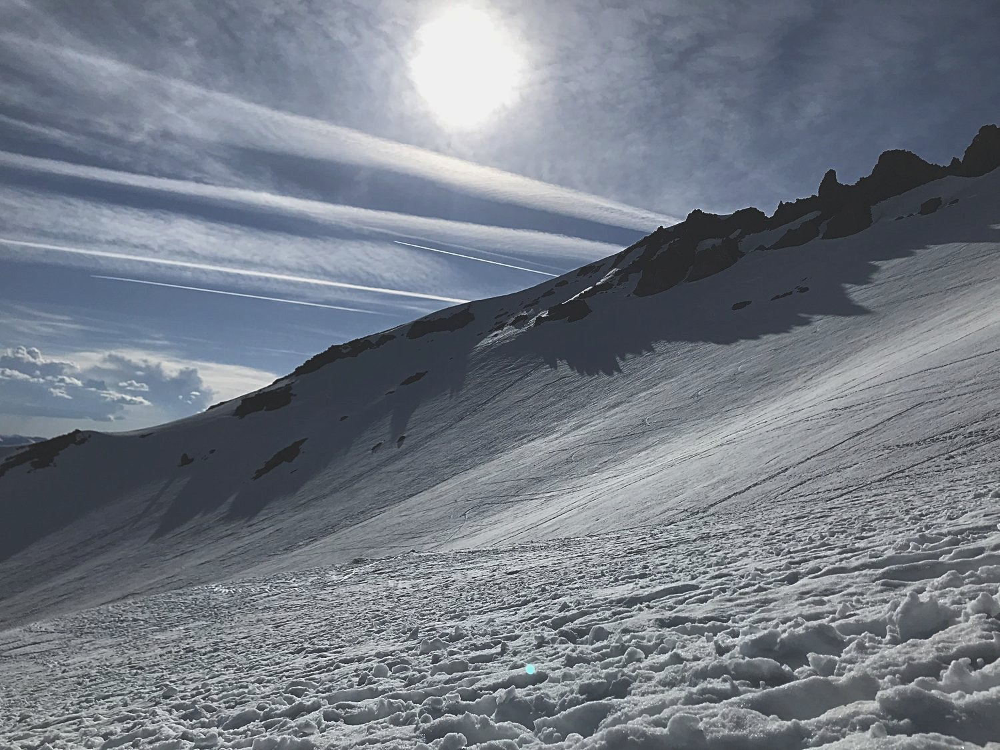
This descent was dreadfully long.
Our plan was to camp at Horse camp again. However, we were so sick of snow and eating utter crap that we decided, with complete unanimity, to stay at a motel that night. (The funniest thing was watching how fast everybody began to descend after that. Before, we were stopping every 2 minutes to wait for Mr. Liu to catch up. Now, we were struggling to match his pace!!! Food and blankets---one helluva morale booster.)
So we had chicken nuggets that night from McDonald's. That was some gooooooood stuff.
Motel was buggy and too hot. I think Daniel and I may have slept with the door open. Here are some nice pictures from the next day:
obligatory
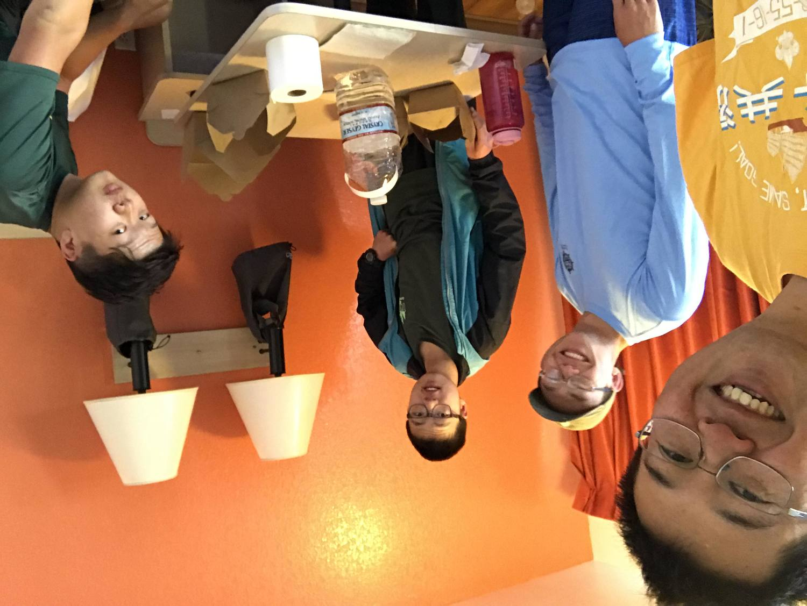
motel photo
parking lot photo
This view of Shasta never gets old. I've watched Shasta go by, from this angle, for about 4 or 5 years straight now, on car and on train.
all massaging burned legs, burned faces, and burned lips...
Overall, not such a fun trip in terms of physical comfort. And the scenery was not like mega-great, but it was a great time with friends and mountains. Thank you for reading.
{kind=link}
{kind=link}
{kind=link}
{kind=link}
{kind=link}
{kind=link}
{kind=link}
{kind=link}
{kind=link}
{kind=link}
{kind=link}
{kind=link}
{kind=link}
{kind=link}
{kind=link}
{kind=link}
{kind=link}
{kind=link}
{kind=link}
{kind=link}
{kind=link}
{kind=link}
{kind=link}
{kind=link}
{kind=link}
{kind=link}
{kind=link}
{kind=link}
{kind=link}
{kind=link}